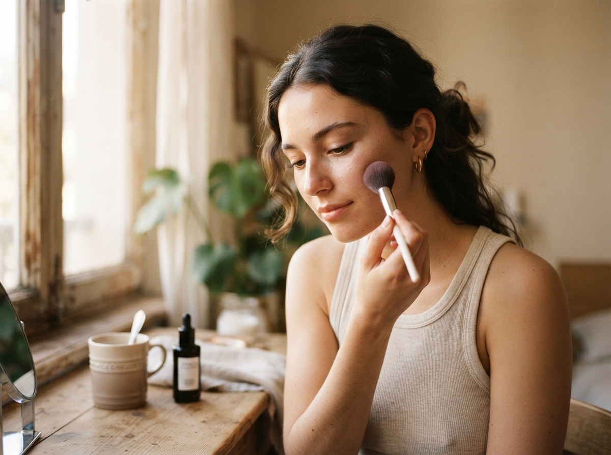

Show us a look you love.
Upload a photo of any makeup look that inspires you — a photo you took, a screenshot, anything.
Drag a photo here, or browse files
Now, a photo of you.
A clear photo of your face in natural light works best. This is used only to build your personal guide.
Drag a photo here, or browse files
Let's confirm your beauty profile.
We've made a guess — feel free to adjust anything.
A few details about your features.
Suggested from your photo — adjust anything that doesn't fit.
Building your guide
This usually takes a moment.
Here's your guide.
Tap or hover a number to see where it applies


Brows — soft, natural definition following your existing arch.
Eyes — a warm neutral wash across the lid, softly diffused at the crease.
Cheeks — cream blush placed high on the cheekbone, tapped toward the temple.
Contour — a light shadow beneath the cheekbone, blended so no edge shows.
Lips — a muted rose tint, patted rather than lined for a soft finish.
What you'll need.
Sheer luminous skin balm
Glow & Co · Warm Sand
Satin quad palette
Studio Neutral · Shade 02
Cream blush stick
Muted Rose